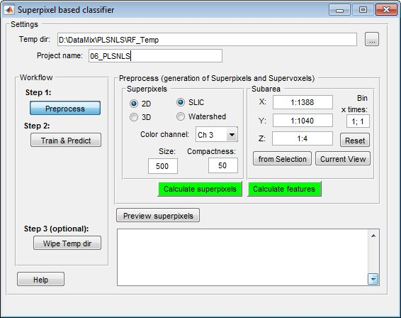

Classifier of superpixels / supervoxels
Classifier of superpixels/supervoxels is a good method for automatic segmentation of images using train and predict scheme.
This classifier uses the SLIC (Simple Linear Iterative Clustering) algorithm written by Radhakrishna Achanta, Appu Shaji, Kevin Smith, Aurelien Lucchi, Pascal Fua, and Sabine Süsstrunk, Ecole Polytechnique Federale de Lausanne (EPFL), Switzerland to simplify the dataset by clustering of pixels into groups: superpixels for 2D or supervoxels for 3D. Each of these superpixels/voxels is characterized and these characteristics are used for the classification.
The example of use is presented below.
Back to Index --> User Guide --> Menu --> Tools
Contents
-
Dataset and the aim of the segmentation -
Training the classifier -
Wiping the temp directory
Dataset and the aim of the segmentation
Below is a dataset imaged with light microscopy where the aim is to segment the outlines of the cells (in green). The cells have different intensity and can't be directly segemented using the black-and-white thresholding.

Training the classifier
The first part of the classification is to select areas that belong to the object of interest and background.
- Start a new model:
Segmentation Panel->the Create button - Add two materials for the model:
Segmentation Panel->the + button - Rename material 1 to
Objectand material 2 toBackground. Highlight material in the left list box, press the right mouse button and selectRenamein the popup menu

- Select the Brush tool and select some profiles of the endoplasmic reticulum and assign them to the
Objectmaterial of the model (select '1' in the 'Add to' list and press the 'A' shortcut) - Select few areas of the background and add those to the
Backgroundmaterial of the model (select '2' in the 'Add to' list and press the 'A' shortcut)
- Start the Classifier:
Menu->Tools->Classifier->Superpixel classification - Specify a directory to keep temporary data. By default, MIB offers to use
RF_Templocated next to the data.

- Select the mode to use:
2Dfor 2D images and superpixels or 3D for 3D datasets and supervoxels - Select the type of superpixels to calculate:
SLICfor objects with distinct intensity vs background orWatershedfor objects that have distinct boundaries - Select the color channel that should be used to generate superpixels/voxels:
Color channel - Define size for superpixels/voxels and their compactness:
SizeandCompactness. For theWatershedsuperpixels theSizefield defines a factor that regulates size of superpixels (larger number gives bigger superpixels) and theBlack on whitefield. When the boundaries of objects are bright over dark background, theBlack on whiteshould be 0; otherwise any number bigger than 0. - If needed the area for processing can be modified using the Subarea panel.
- Press the
Calculate superpixelsbutton to generate SLIC superpixels - Press the
Preview superpixelsbutton to see the generated superpixels

- If size and quality of superpixels is acceptable press the
Calculate featuresbutton to calculate features for the superpixels. - Press the
Train & Predict buttonto access settings for the classification
In this window it is possible either load classifier from the training session done earlier (the Load classifier button), or train a new one if labels exist.
- Select
Objectin theObjectpopup menu - Select
Backgroundin theBackgroundpopup menu - Choose type of the classifier to use in the
Classifierpopup menu - Press the
Train classifierto start the training session - Press the
Predict datasetto start the prediction session - Check results in the
Image View panel. If needed add more markers for the Object and Background and repeat Training and Prediction.

Wiping the temp directory
During the prediction the classifier creates files in the RF_Temp directory. This directory can be deleted by pressing the Wipe Temp dir button or manually using any file explorer.
Back to Index --> User Guide --> Menu --> Tools